<?xml version="1.0" encoding="UTF-8" standalone="no"?>
 user.preroot <!DOCTYPE html PUBLIC "-//W3C//DTD XHTML 1.0 Transitional//EN" "http://www.w3.org/TR/xhtml1/DTD/xhtml1-transitional.dtd"><html xmlns="http://www.w3.org/1999/xhtml"><head><meta http-equiv="Content-Type" content="text/html; charset=UTF-8" /> user.head.title <link rel="stylesheet" type="text/css" href="../docbook.css" /><meta name="generator" content="DocBook XSL Stylesheets Vsnapshot" /><meta name="keywords" content="Cisco, H3C, Juniper, F5 BIG-IP, Array, Dell, IBM, HP, , " /><link rel="home" href="../index.html" title="Netkiller Network 手札" /><link rel="up" href="server.html" title="第 25 章 Dell Server" /><link rel="prev" href="server.html" title="第 25 章 Dell Server" /><link rel="next" href="storage.html" title="第 26 章 MD Storage" /> user.head.content </head><body> user.header.navigation <div class="navheader"><table width="100%" summary="Navigation header"><tr><th colspan="3" align="center">PERC H700 Integrated - Raid Card</th></tr><tr><td width="20%" align="left"><a accesskey="p" href="server.html">上一页</a> </td><th width="60%" align="center">第 25 章 Dell Server</th><td width="20%" align="right"> <a accesskey="n" href="storage.html">下一页</a></td></tr></table><hr /></div> user.header.content <div class="section"><div class="titlepage"><div><div><h2 class="title" style="clear: both"><a id="server.raid"></a>PERC H700 Integrated - Raid Card</h2></div></div></div><div><table border="0" summary="manufactured viewport for HTML img" style="cellpadding: 0; cellspacing: 0;" width="NaN"><tr><td>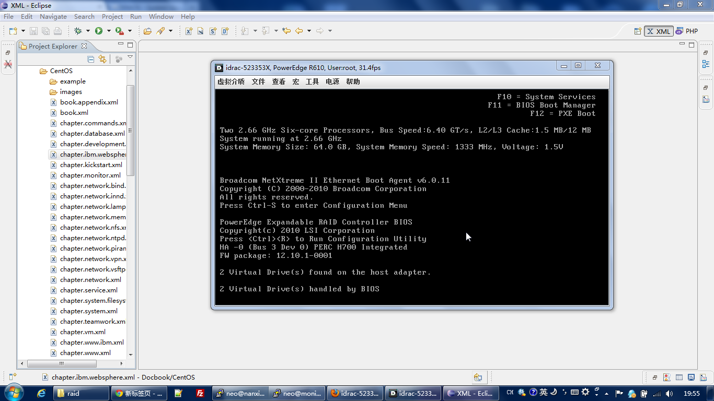</td></tr></table></div><div><table border="0" summary="manufactured viewport for HTML img" style="cellpadding: 0; cellspacing: 0;" width="NaN"><tr><td>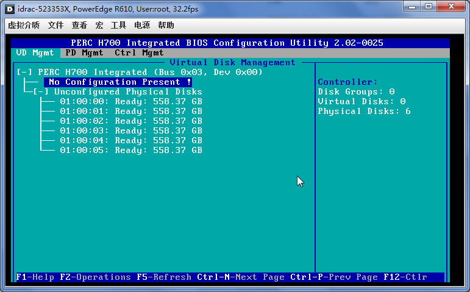</td></tr></table></div><div class="section"><div class="titlepage"><div><div><h3 class="title"><a id="id961"></a>Clear Config</h3></div></div></div><div><table border="0" summary="manufactured viewport for HTML img" style="cellpadding: 0; cellspacing: 0;" width="NaN"><tr><td>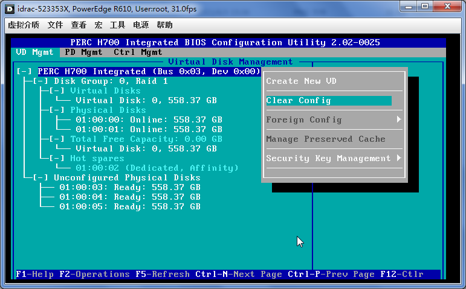</td></tr></table></div><div><table border="0" summary="manufactured viewport for HTML img" style="cellpadding: 0; cellspacing: 0;" width="NaN"><tr><td>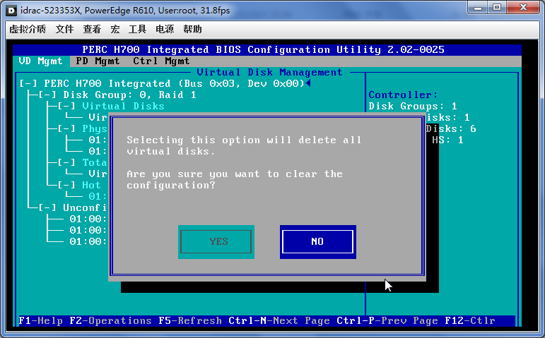</td></tr></table></div></div><div class="section"><div class="titlepage"><div><div><h3 class="title"><a id="id962"></a>Raid 0</h3></div></div></div><p>F2</p><div><table border="0" summary="manufactured viewport for HTML img" style="cellpadding: 0; cellspacing: 0;" width="NaN"><tr><td>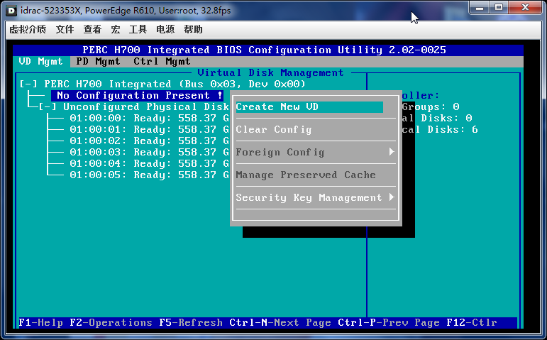</td></tr></table></div><div><table border="0" summary="manufactured viewport for HTML img" style="cellpadding: 0; cellspacing: 0;" width="NaN"><tr><td>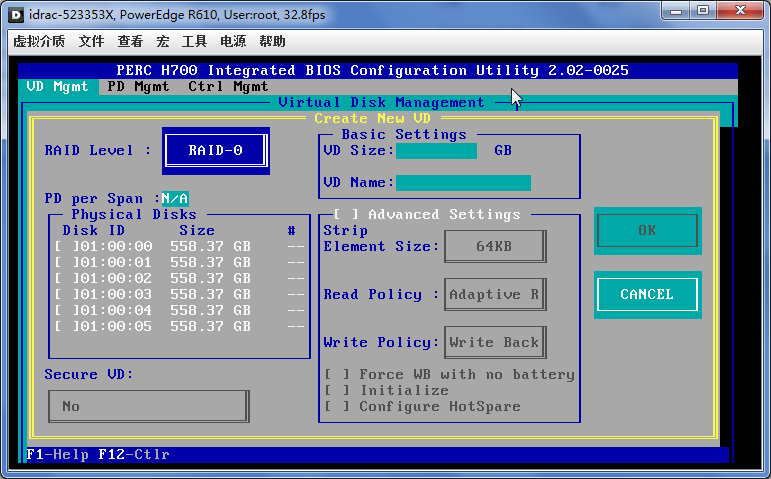</td></tr></table></div><div><table border="0" summary="manufactured viewport for HTML img" style="cellpadding: 0; cellspacing: 0;" width="NaN"><tr><td></td></tr></table></div><div><table border="0" summary="manufactured viewport for HTML img" style="cellpadding: 0; cellspacing: 0;" width="NaN"><tr><td></td></tr></table></div><div><table border="0" summary="manufactured viewport for HTML img" style="cellpadding: 0; cellspacing: 0;" width="NaN"><tr><td>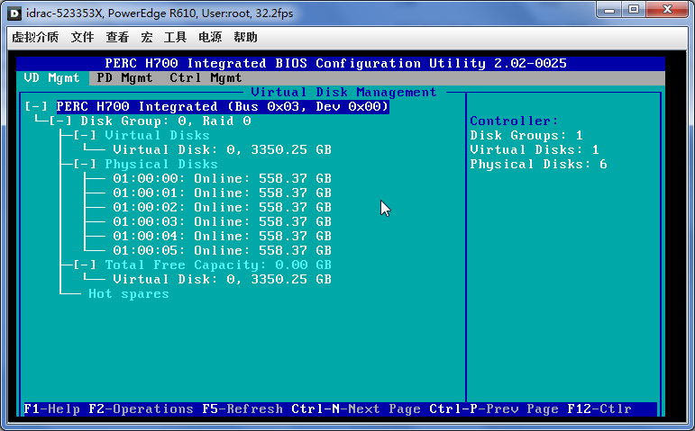</td></tr></table></div></div><div class="section"><div class="titlepage"><div><div><h3 class="title"><a id="id963"></a>Raid 1</h3></div></div></div><div><table border="0" summary="manufactured viewport for HTML img" style="cellpadding: 0; cellspacing: 0;" width="NaN"><tr><td></td></tr></table></div><div><table border="0" summary="manufactured viewport for HTML img" style="cellpadding: 0; cellspacing: 0;" width="NaN"><tr><td></td></tr></table></div><div><table border="0" summary="manufactured viewport for HTML img" style="cellpadding: 0; cellspacing: 0;" width="NaN"><tr><td>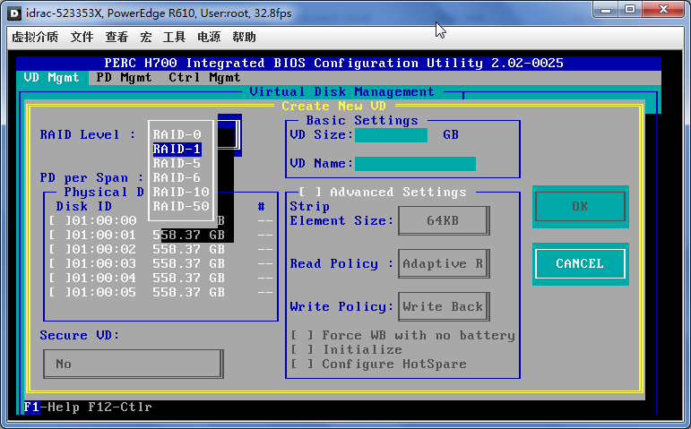</td></tr></table></div><div><table border="0" summary="manufactured viewport for HTML img" style="cellpadding: 0; cellspacing: 0;" width="NaN"><tr><td></td></tr></table></div><div><table border="0" summary="manufactured viewport for HTML img" style="cellpadding: 0; cellspacing: 0;" width="NaN"><tr><td>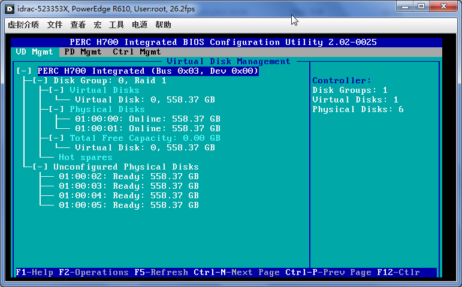</td></tr></table></div></div><div class="section"><div class="titlepage"><div><div><h3 class="title"><a id="id964"></a>Raid 5</h3></div></div></div><div><table border="0" summary="manufactured viewport for HTML img" style="cellpadding: 0; cellspacing: 0;" width="NaN"><tr><td></td></tr></table></div><div><table border="0" summary="manufactured viewport for HTML img" style="cellpadding: 0; cellspacing: 0;" width="NaN"><tr><td>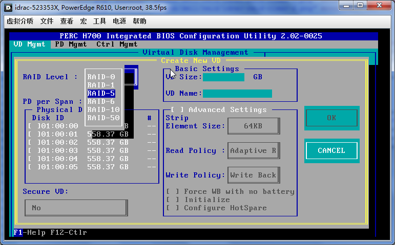</td></tr></table></div><div><table border="0" summary="manufactured viewport for HTML img" style="cellpadding: 0; cellspacing: 0;" width="NaN"><tr><td></td></tr></table></div><div><table border="0" summary="manufactured viewport for HTML img" style="cellpadding: 0; cellspacing: 0;" width="NaN"><tr><td>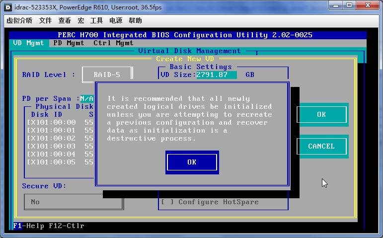</td></tr></table></div><div><table border="0" summary="manufactured viewport for HTML img" style="cellpadding: 0; cellspacing: 0;" width="NaN"><tr><td>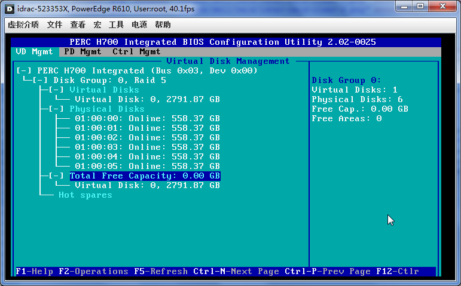</td></tr></table></div></div><div class="section"><div class="titlepage"><div><div><h3 class="title"><a id="id965"></a>Raid 6</h3></div></div></div><div><table border="0" summary="manufactured viewport for HTML img" style="cellpadding: 0; cellspacing: 0;" width="NaN"><tr><td></td></tr></table></div><div><table border="0" summary="manufactured viewport for HTML img" style="cellpadding: 0; cellspacing: 0;" width="NaN"><tr><td></td></tr></table></div></div><div class="section"><div class="titlepage"><div><div><h3 class="title"><a id="id966"></a>Raid 10</h3></div></div></div><div><table border="0" summary="manufactured viewport for HTML img" style="cellpadding: 0; cellspacing: 0;" width="NaN"><tr><td></td></tr></table></div><div><table border="0" summary="manufactured viewport for HTML img" style="cellpadding: 0; cellspacing: 0;" width="NaN"><tr><td></td></tr></table></div><div><table border="0" summary="manufactured viewport for HTML img" style="cellpadding: 0; cellspacing: 0;" width="NaN"><tr><td>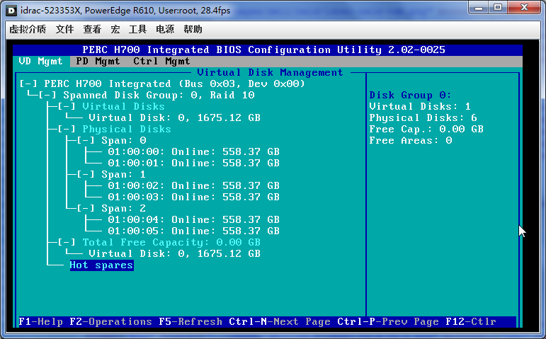</td></tr></table></div></div><div class="section"><div class="titlepage"><div><div><h3 class="title"><a id="id967"></a>Raid 50</h3></div></div></div><div><table border="0" summary="manufactured viewport for HTML img" style="cellpadding: 0; cellspacing: 0;" width="NaN"><tr><td></td></tr></table></div><div><table border="0" summary="manufactured viewport for HTML img" style="cellpadding: 0; cellspacing: 0;" width="NaN"><tr><td>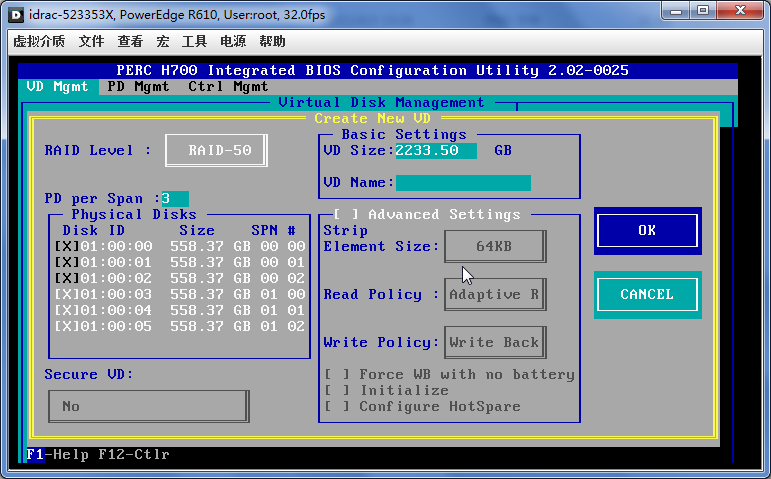</td></tr></table></div><div><table border="0" summary="manufactured viewport for HTML img" style="cellpadding: 0; cellspacing: 0;" width="NaN"><tr><td>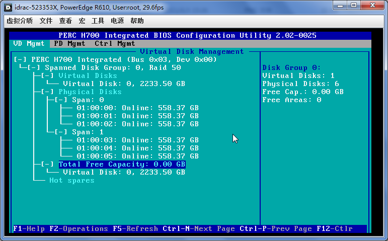</td></tr></table></div></div><div class="section"><div class="titlepage"><div><div><h3 class="title"><a id="id968"></a>HS</h3></div></div></div><div><table border="0" summary="manufactured viewport for HTML img" style="cellpadding: 0; cellspacing: 0;" width="NaN"><tr><td>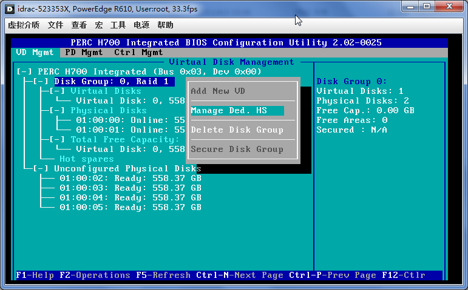</td></tr></table></div><div><table border="0" summary="manufactured viewport for HTML img" style="cellpadding: 0; cellspacing: 0;" width="NaN"><tr><td>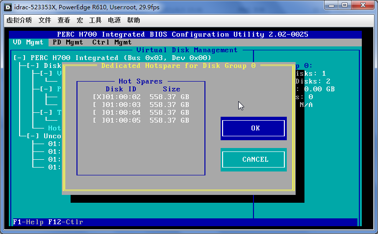</td></tr></table></div><div><table border="0" summary="manufactured viewport for HTML img" style="cellpadding: 0; cellspacing: 0;" width="NaN"><tr><td></td></tr></table></div></div><div class="section"><div class="titlepage"><div><div><h3 class="title"><a id="id969"></a>Virtual Disk</h3></div></div></div><div><table border="0" summary="manufactured viewport for HTML img" style="cellpadding: 0; cellspacing: 0;" width="NaN"><tr><td></td></tr></table></div><div><table border="0" summary="manufactured viewport for HTML img" style="cellpadding: 0; cellspacing: 0;" width="NaN"><tr><td>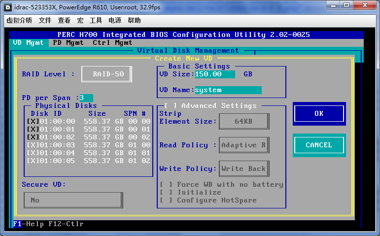</td></tr></table></div><div><table border="0" summary="manufactured viewport for HTML img" style="cellpadding: 0; cellspacing: 0;" width="NaN"><tr><td>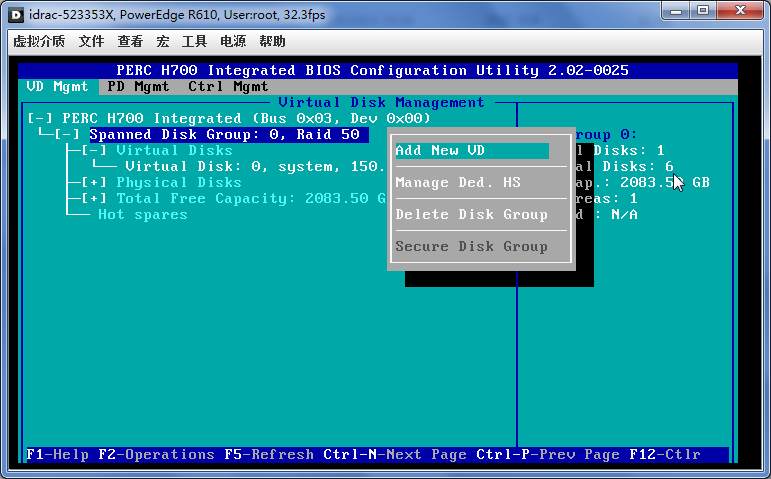</td></tr></table></div><div><table border="0" summary="manufactured viewport for HTML img" style="cellpadding: 0; cellspacing: 0;" width="NaN"><tr><td>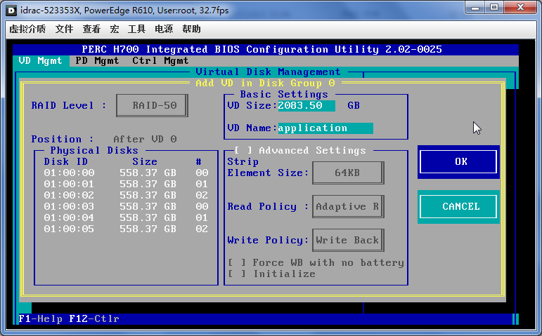</td></tr></table></div><div><table border="0" summary="manufactured viewport for HTML img" style="cellpadding: 0; cellspacing: 0;" width="NaN"><tr><td>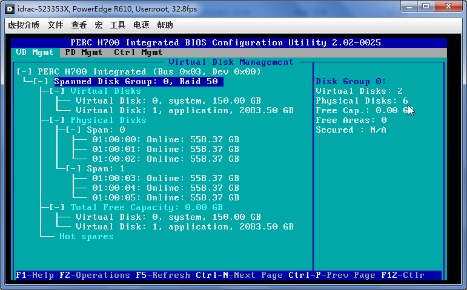</td></tr></table></div><p>Delete VD</p><div><table border="0" summary="manufactured viewport for HTML img" style="cellpadding: 0; cellspacing: 0;" width="NaN"><tr><td>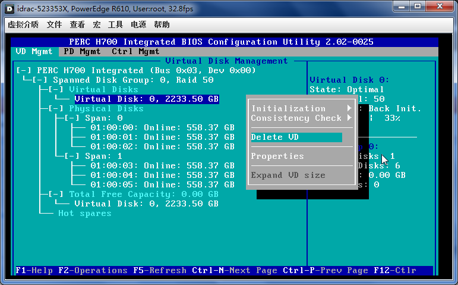</td></tr></table></div><div><table border="0" summary="manufactured viewport for HTML img" style="cellpadding: 0; cellspacing: 0;" width="NaN"><tr><td>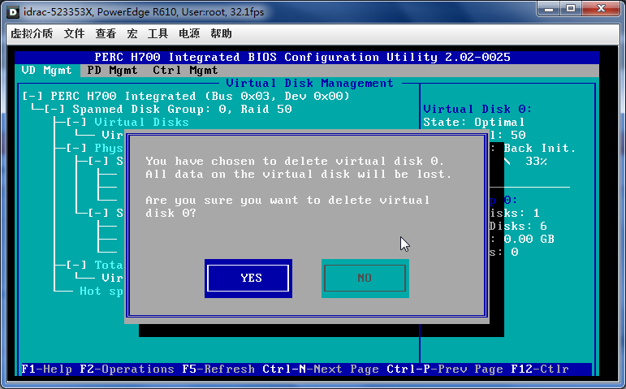</td></tr></table></div></div><div class="section"><div class="titlepage"><div><div><h3 class="title"><a id="id970"></a>Save</h3></div></div></div><div><table border="0" summary="manufactured viewport for HTML img" style="cellpadding: 0; cellspacing: 0;" width="NaN"><tr><td>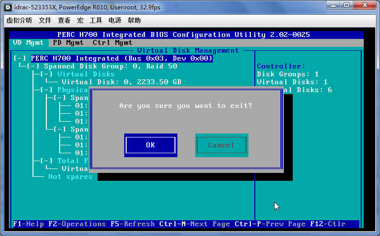</td></tr></table></div></div></div> user.footer.content <div class="navfooter"><hr /><table width="100%" summary="Navigation footer"><tr><td width="40%" align="left"><a accesskey="p" href="server.html">上一页</a> </td><td width="20%" align="center"><a accesskey="u" href="server.html">上一级</a></td><td width="40%" align="right"> <a accesskey="n" href="storage.html">下一页</a></td></tr><tr><td width="40%" align="left" valign="top">第 25 章 Dell Server </td><td width="20%" align="center"><a accesskey="h" href="../index.html">起始页</a></td><td width="40%" align="right" valign="top"> 第 26 章 MD Storage</td></tr></table></div> user.footer.navigation </body></html>